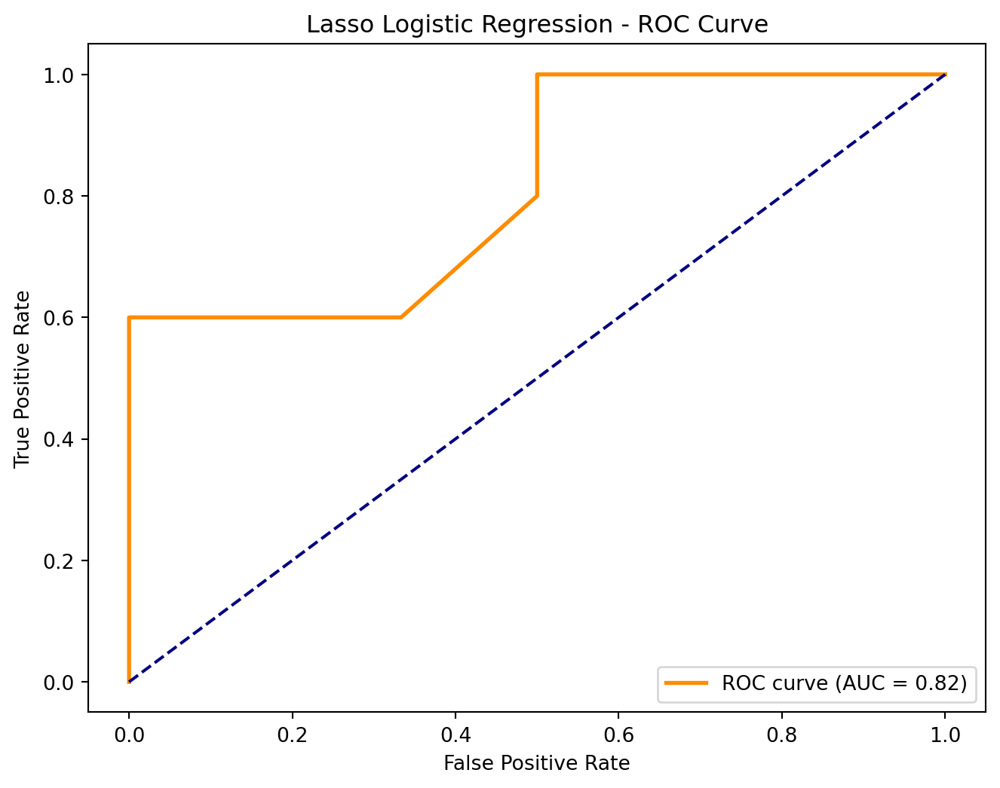

Gun Policy Impact on Firearm Mortality: A Statistical Analysis
Introduction
In this analysis, we investigate the impact of various gun policies on firearm mortality rates across different states. Our main goal is to explore how different gun control measures (such as background checks, waiting periods, and concealed carry laws) affect the likelihood of high firearm mortality.
Data Preparation
We start by loading the dataset and preparing the binary predictors, which represent different gun control policies. The target variable will be whether the firearm mortality rate in each state is above or below the median value.
Code
import pandas as pdimport numpy as npimport statsmodels.api as smfrom sklearn.preprocessing import StandardScalerfrom sklearn.model_selection import StratifiedKFold, cross_validatefrom sklearn.linear_model import LogisticRegressionimport matplotlib.pyplot as pltfrom sklearn.impute import SimpleImputerfrom sklearn.model_selection import train_test_splitfrom sklearn.metrics import accuracy_score, precision_score, recall_score, f1_score, roc_curve, aucfrom statsmodels.stats.outliers_influence import variance_inflation_factorimport statsmodels.api as sm
Code
# Load the datasetdf = pd.read_csv("data/merged_data.csv")# Define binary predictors (indicators of gun control measures)binary_predictors = ["prohibition_for_stalkers", "abusers_turn_in_gun_after_conviction", "prohibition_for_domestic_abusers", "prohibition_for_convicted_domestic_abusers","waiting_period", "mental_health_in_background_check","funding_for_violence_intervention", "no_purchase_after_violent_offense", "age_requirement", "mentaI_illness_prohibitor", "hate_crime_prohibitor", "gun_removal_program", "fugitive_from_justice_prohibitor","felony_prohibitor", "restraining_order_prohibitor", "no_open_carry", "no_guns_in_k_through_twelve_schools", "no_guns_at_demonstrations", "no_guns_on_college_campuses", "bar_concealed_carry_by_people_with_violent_misdemeanors","high_capacity_magazines_prohibited", "dealer_lisence_required", "asault_weapons_prohibited", "secure_storage_child_access_laws", "rejected_shoot_first_laws", "red_flag_laws", "background_check_or_purchase_permit", "concealed_carry_permit_required", "extreme_risk_law"]# Create a new binary variable representing whether the state's firearm mortality rate is above or below the mediandf["firearm_mortality_above_median"] = ( df["firearm_mortality_by_state_2022"] > df["firearm_mortality_by_state_2022"].median()).astype(int)
Variance Inflation Factor (VIF)
We calculate the Variance Inflation Factor (VIF) to detect multicollinearity among our predictors. High multicollinearity can lead to unreliable coefficient estimates, which is problematic for regression analysis.
Code
def calculate_vif(df, features): X = df[features].dropna() vif_data = pd.DataFrame() vif_data["Feature"] = features vif_data["VIF"] = [variance_inflation_factor(X.values, i) for i inrange(X.shape[1])]return vif_data.sort_values("VIF", ascending=False)# Calculate the VIF for the binary predictorsvif_results = calculate_vif(df, binary_predictors)vif_results
/opt/miniconda3/envs/5000/lib/python3.11/site-packages/statsmodels/stats/outliers_influence.py:197: RuntimeWarning:
divide by zero encountered in scalar divide
Feature
VIF
28
extreme_risk_law
inf
25
red_flag_laws
inf
26
background_check_or_purchase_permit
34.120555
23
secure_storage_child_access_laws
19.409667
2
prohibition_for_domestic_abusers
19.219889
3
prohibition_for_convicted_domestic_abusers
14.651150
27
concealed_carry_permit_required
14.206034
20
high_capacity_magazines_prohibited
13.129414
8
age_requirement
12.870507
5
mental_health_in_background_check
11.494630
24
rejected_shoot_first_laws
10.908297
19
bar_concealed_carry_by_people_with_violent_mis...
9.850592
15
no_open_carry
9.793785
6
funding_for_violence_intervention
9.701323
18
no_guns_on_college_campuses
9.266462
1
abusers_turn_in_gun_after_conviction
8.473309
21
dealer_lisence_required
8.434397
14
restraining_order_prohibitor
7.898667
13
felony_prohibitor
7.794676
16
no_guns_in_k_through_twelve_schools
7.320592
9
mentaI_illness_prohibitor
6.849471
12
fugitive_from_justice_prohibitor
5.939613
7
no_purchase_after_violent_offense
5.546699
0
prohibition_for_stalkers
5.051972
22
asault_weapons_prohibited
4.808796
11
gun_removal_program
4.313899
17
no_guns_at_demonstrations
4.135743
4
waiting_period
4.133643
10
hate_crime_prohibitor
3.477117
Univariate Logistic Regression
We perform univariate logistic regression to assess the relationship between each binary predictor and the target variable (firearm_mortality_above_median). The goal is to evaluate the impact of each feature individually.
Code
def univariate_logistic_regression(df, features, target): results = []for feature in features: X = sm.add_constant(df[[feature]].dropna()) # Add intercept y = df[target][X.index] # Ensure matching index model = sm.Logit(y, X).fit(disp=0) results.append({"Feature": feature,"Odds Ratio": np.exp(model.params[feature]), # Convert log-odds to odds ratio"P-value": model.pvalues[feature] }) results_df = pd.DataFrame(results).sort_values("P-value")return results_df# Perform univariate logistic regression on the binary predictorsunivariate_results = univariate_logistic_regression(df, binary_predictors, "firearm_mortality_above_median")print(univariate_results)
/opt/miniconda3/envs/5000/lib/python3.11/site-packages/statsmodels/base/model.py:607: ConvergenceWarning:
Maximum Likelihood optimization failed to converge. Check mle_retvals
Composite Indices
Next, we combine related variables into composite indices. These indices represent overall policy categories, such as access control, domestic violence, and gun carry restrictions.
Code
def create_composite_indices(df): indices = {'access_control_index': ['background_check_or_purchase_permit','dealer_lisence_required','secure_storage_child_access_laws','age_requirement','fugitive_from_justice_prohibitor','mentaI_illness_prohibitor','waiting_period' ],'domestic_violence_index': ['prohibition_for_domestic_abusers','prohibition_for_convicted_domestic_abusers','restraining_order_prohibitor','prohibition_for_stalkers','bar_concealed_carry_by_people_with_violent_misdemeanors','abusers_turn_in_gun_after_conviction','no_purchase_after_violent_offense','rejected_shoot_first_laws','red_flag_laws','extreme_risk_law','hate_crime_prohibitor' ],'gun_carry_restrictions_index': ['no_open_carry','high_capacity_magazines_prohibited','concealed_carry_permit_required' ] } df_copy = df.copy()for name, columns in indices.items(): df_copy[name] = df_copy[columns].fillna(0).mean(axis=1)return df_copy# Create composite indices for the datasetdf_with_indices = create_composite_indices(df)
VIF After Composite Indices
We recalculate the VIF for the composite indices to check for multicollinearity after creating the indices.
Now we prepare the data for logistic regression. This step involves handling missing values, scaling the features, and splitting the data into training and testing sets.
Code
def prepare_data_for_logistic_regression(df): features = ['access_control_index','domestic_violence_index','gun_carry_restrictions_index' ] df_clean = df[features + ['firearm_mortality_above_median']].copy()# Handle missing values using mean imputation imputer = SimpleImputer(strategy="mean") X_imputed = imputer.fit_transform(df_clean[features]) y = df_clean['firearm_mortality_above_median']print(f"Original data shape: {df.shape}")print(f"Cleaned data shape: ({len(y)}, {len(features)})") # Scale the features scaler = StandardScaler() X_scaled = scaler.fit_transform(X_imputed)return X_scaled, y, features
Logistic Regression Model Comparison
We compare multiple logistic regression models to determine which one works best. Models include Standard Logistic Regression, Lasso (L1) Logistic Regression, Ridge (L2) Logistic Regression, and Elastic Net Logistic Regression.
Code
X_scaled, y, features = prepare_data_for_logistic_regression(df_with_indices)from sklearn.linear_model import LogisticRegressionfrom sklearn.model_selection import cross_val_scoreimport numpy as npimport pandas as pdmodels = {"Standard Logistic Regression": LogisticRegression(penalty=None, solver="lbfgs", max_iter=1000),"Lasso (L1) Logistic Regression": LogisticRegression(penalty="l1", solver="liblinear", max_iter=1000),"Ridge (L2) Logistic Regression": LogisticRegression(penalty="l2", solver="liblinear", max_iter=1000),"Elastic Net Logistic Regression": LogisticRegression(penalty="elasticnet", solver="saga", l1_ratio=0.5, max_iter=1000)}cv_results = {}for name, model in models.items(): scores = cross_val_score(model, X_scaled, y, cv=5, scoring="accuracy") cv_results[name] = {"Mean Accuracy": np.mean(scores),"Std Dev": np.std(scores) }cv_results_df = pd.DataFrame(cv_results).Tcv_results_df.sort_values("Mean Accuracy", ascending=False, inplace=True)print("Logistic Regression Model Comparison:")print(cv_results_df.to_markdown())
Original data shape: (51, 60)
Cleaned data shape: (51, 3)
Logistic Regression Model Comparison:
| | Mean Accuracy | Std Dev |
|:--------------------------------|----------------:|----------:|
| Standard Logistic Regression | 0.801818 | 0.0661578 |
| Lasso (L1) Logistic Regression | 0.801818 | 0.0661578 |
| Elastic Net Logistic Regression | 0.801818 | 0.0661578 |
| Ridge (L2) Logistic Regression | 0.781818 | 0.100248 |
Model Evaluation: Lasso Logistic Regression
Finally, we evaluate the performance of the Lasso Logistic Regression model using metrics such as accuracy, precision, recall, F1 score, and ROC AUC.
Lasso Model Performance:
Accuracy: 0.6364
Precision: 0.5714
Recall: 0.8000
F1 Score: 0.6667
ROC AUC: 0.8167

Lasso Feature Importance
We visualize the feature importance for the Lasso model, which gives insights into which policies are most influential in predicting firearm mortality.